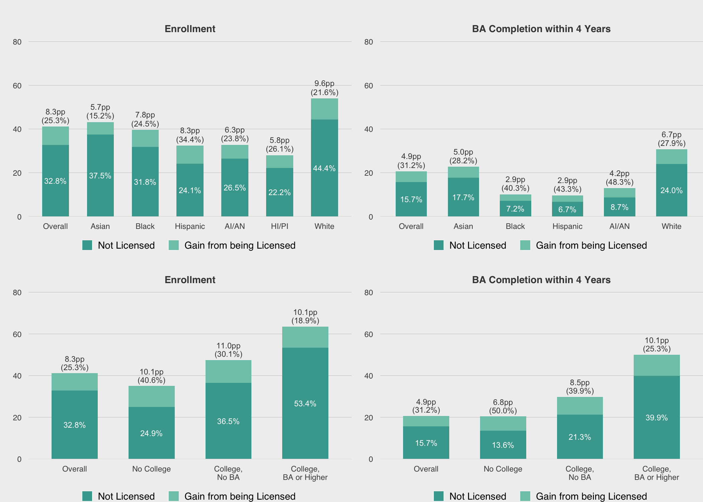

A Sociological Analysis of Structural Racism in Student List Products
Introduction
College Board Search and student outcomes
Howell, Hurwitz, Mabel, et al. (2021)
create_cb_figure <- function(categories, values, plot_title, fill_values = rev(color_palette[1:2])) {
cb_fig_df <- data.frame(
category = rep(categories, each = 2),
subcategory = rep(c('Not Licensed', 'Gain from being Licensed'), length(categories)),
value = values
)
cb_fig_df$category <- factor(cb_fig_df$category, levels = categories)
cb_fig_df %>%
left_join(
cb_fig_df %>%
pivot_wider(id_cols = category, names_from = subcategory, values_from = value) %>%
mutate(
total = `Not Licensed` + `Gain from being Licensed`,
pct_change = `Gain from being Licensed` / `Not Licensed` * 100
),
by = 'category') %>%
ggplot(aes(x = category, y = value, fill = subcategory, width = 0.6)) +
geom_bar(position = 'stack', stat = 'identity') +
geom_text(aes(y = value, label = if_else(subcategory == 'Not Licensed', str_c(sprintf('%.1f', value), '%'), '')), color = color_text, size = 2, position = position_stack(vjust = 0.5)) +
geom_text(aes(y = total + 3, label = if_else(subcategory == 'Not Licensed', str_c('(', sprintf('%.1f', pct_change), '%)'), '')), color = '#444444', size = 2) +
geom_text(aes(y = total + 7, label = if_else(subcategory == 'Not Licensed', str_c(sprintf('%.1f', `Gain from being Licensed`), 'pp'), '')), color = '#444444', size = 2) +
ggtitle(plot_title) +
xlab('') + ylab('') +
scale_y_continuous(expand = expansion(mult = c(0, 0.05)), limits = c(0, 80)) +
scale_fill_manual(values = fill_values) +
theme(
plot.margin = margin(t = 0.6, unit = 'cm'),
panel.grid.major.y = element_line(size = 0.1, color = 'gray'),
legend.title = element_blank(),
legend.position = 'bottom',
legend.margin = margin(t = -0.5, unit = 'cm'),
legend.text = element_text(margin = margin(r = 0.2, unit = 'cm'))
) +
guides(fill = guide_legend(reverse = T))
}
grid.arrange(
create_cb_figure(
c('Overall', 'Asian', 'Black', 'Hispanic', 'AI/AN', 'HI/PI', 'White'),
c(32.8, 8.3, 37.5, 5.7, 31.8, 7.8, 24.1, 8.3, 26.5, 6.3, 22.2, 5.8, 44.4, 9.6),
'Enrollment'
),
create_cb_figure(
c('Overall', 'Asian', 'Black', 'Hispanic', 'AI/AN', 'White'),
c(15.7, 4.9, 17.7, 5.0, 7.2, 2.9, 6.7, 2.9, 8.7, 4.2, 24.0, 6.7),
'BA Completion within 4 Years'
),
create_cb_figure(
c('Overall', 'No College', 'College,\nNo BA', 'College,\nBA or Higher'),
c(32.8, 8.3, 24.9, 10.1, 36.5, 11.0, 53.4, 10.1),
'Enrollment'
),
create_cb_figure(
c('Overall', 'No College', 'College,\nNo BA', 'College,\nBA or Higher'),
c(15.7, 4.9, 13.6, 6.8, 21.3, 8.5, 39.9, 10.1),
'BA Completion within 4 Years'
),
ncol = 2
)
## Warning in grid.Call(C_textBounds, as.graphicsAnnot(x$label), x$x, x$y, : font family not found in Windows font database
## Warning in grid.Call(C_textBounds, as.graphicsAnnot(x$label), x$x, x$y, : font family not found in Windows font database
## Warning in grid.Call(C_textBounds, as.graphicsAnnot(x$label), x$x, x$y, : font family not found in Windows font database
## Warning in grid.Call(C_textBounds, as.graphicsAnnot(x$label), x$x, x$y, : font family not found in Windows font database
## Warning in grid.Call(C_textBounds, as.graphicsAnnot(x$label), x$x, x$y, : font family not found in Windows font database
## Warning in grid.Call(C_textBounds, as.graphicsAnnot(x$label), x$x, x$y, : font family not found in Windows font database
## Warning in grid.Call(C_textBounds, as.graphicsAnnot(x$label), x$x, x$y, : font family not found in Windows font database
## Warning in grid.Call(C_textBounds, as.graphicsAnnot(x$label), x$x, x$y, : font family not found in Windows font database
## Warning in grid.Call(C_textBounds, as.graphicsAnnot(x$label), x$x, x$y, : font family not found in Windows font database
## Warning in grid.Call(C_textBounds, as.graphicsAnnot(x$label), x$x, x$y, : font family not found in Windows font database
## Warning in grid.Call(C_textBounds, as.graphicsAnnot(x$label), x$x, x$y, : font family not found in Windows font database
## Warning in grid.Call(C_textBounds, as.graphicsAnnot(x$label), x$x, x$y, : font family not found in Windows font database
## Warning in grid.Call(C_textBounds, as.graphicsAnnot(x$label), x$x, x$y, : font family not found in Windows font database
## Warning in grid.Call(C_textBounds, as.graphicsAnnot(x$label), x$x, x$y, : font family not found in Windows font database
## Warning in grid.Call(C_textBounds, as.graphicsAnnot(x$label), x$x, x$y, : font family not found in Windows font database
## Warning in grid.Call(C_textBounds, as.graphicsAnnot(x$label), x$x, x$y, : font family not found in Windows font database
## Warning in grid.Call(C_textBounds, as.graphicsAnnot(x$label), x$x, x$y, : font family not found in Windows font database
## Warning in grid.Call(C_textBounds, as.graphicsAnnot(x$label), x$x, x$y, : font family not found in Windows font database
## Warning in grid.Call(C_textBounds, as.graphicsAnnot(x$label), x$x, x$y, : font family not found in Windows font database
## Warning in grid.Call(C_textBounds, as.graphicsAnnot(x$label), x$x, x$y, : font family not found in Windows font database
## Warning in grid.Call(C_textBounds, as.graphicsAnnot(x$label), x$x, x$y, : font family not found in Windows font database
## Warning in grid.Call(C_textBounds, as.graphicsAnnot(x$label), x$x, x$y, : font family not found in Windows font database
## Warning in grid.Call(C_textBounds, as.graphicsAnnot(x$label), x$x, x$y, : font family not found in Windows font database
## Warning in grid.Call(C_textBounds, as.graphicsAnnot(x$label), x$x, x$y, : font family not found in Windows font database
## Warning in grid.Call(C_textBounds, as.graphicsAnnot(x$label), x$x, x$y, : font family not found in Windows font database
## Warning in grid.Call(C_textBounds, as.graphicsAnnot(x$label), x$x, x$y, : font family not found in Windows font database
## Warning in grid.Call(C_textBounds, as.graphicsAnnot(x$label), x$x, x$y, : font family not found in Windows font database
## Warning in grid.Call(C_textBounds, as.graphicsAnnot(x$label), x$x, x$y, : font family not found in Windows font database
## Warning in grid.Call(C_textBounds, as.graphicsAnnot(x$label), x$x, x$y, : font family not found in Windows font database
## Warning in grid.Call(C_textBounds, as.graphicsAnnot(x$label), x$x, x$y, : font family not found in Windows font database
## Warning in grid.Call(C_textBounds, as.graphicsAnnot(x$label), x$x, x$y, : font family not found in Windows font database
## Warning in grid.Call(C_textBounds, as.graphicsAnnot(x$label), x$x, x$y, : font family not found in Windows font database
## Warning in grid.Call(C_textBounds, as.graphicsAnnot(x$label), x$x, x$y, : font family not found in Windows font database
## Warning in grid.Call(C_textBounds, as.graphicsAnnot(x$label), x$x, x$y, : font family not found in Windows font database
## Warning in grid.Call(C_textBounds, as.graphicsAnnot(x$label), x$x, x$y, : font family not found in Windows font database
## Warning in grid.Call(C_textBounds, as.graphicsAnnot(x$label), x$x, x$y, : font family not found in Windows font database
## Warning in grid.Call(C_textBounds, as.graphicsAnnot(x$label), x$x, x$y, : font family not found in Windows font database
## Warning in grid.Call(C_textBounds, as.graphicsAnnot(x$label), x$x, x$y, : font family not found in Windows font database
## Warning in grid.Call(C_textBounds, as.graphicsAnnot(x$label), x$x, x$y, : font family not found in Windows font database
## Warning in grid.Call(C_textBounds, as.graphicsAnnot(x$label), x$x, x$y, : font family not found in Windows font database
## Warning in grid.Call(C_textBounds, as.graphicsAnnot(x$label), x$x, x$y, : font family not found in Windows font database
## Warning in grid.Call(C_textBounds, as.graphicsAnnot(x$label), x$x, x$y, : font family not found in Windows font database

Scholarship on college access
Extant literatures
- Student behavior
- Effects of federal, state, and local policies
- Behavior of schools and postsecondary institutions (PSIs)
- Scholarship on enrollment management fits here
- Scholarship on admissions fits here
- Scholarship on enrollment management fits here
Third-party providers (the other for-profit industry)
- Schools and PSIs outsource functions to vendors and consultancies (Jaquette, Salazar, and Martin, 2022; Komljenovic, 2021; Komljenovic, 2022)
- Scholars have not investigated how third-party produces and services structure college access
Developing a literature about algorithmic products
- Literature at the intersections of access, enrollment management, and edtech
- Analyze products purchased by schools and PSIs
- Analyze the organizations that sell these products
This study constructs and deconstructs student list products sold by College Board
Structural racism in algorithmic products
Structural racism
- Processes viewed as neutral or common-sense that systematicallyadvantage disadvantage marginalized groups
Scholarship from critical data studies (e.g., Benjamin, 2019; Noble, 2018) and sociology of race (e.g., Cottom, 2020; Norris, 2021)
- Algorithmic products are not race neutral
Algorithmic products reproduce/increase racial inequality by utilizing structurally racist inputs
- Seemingly neutral inputs that correlate with race because of historical exclusion from this input (e.g., EXAMPLE)
This study
- RQ: What is the relationship between student list search filters (e.g., test score range, zip code) and the characteristics of students who are included vs. excluded by student list purchases?
- Analyze student lists purchased from College Board
- Focus on race and class inequality in which prospects are included/excluded by student list purchases
Background: Student Lists
Lists vis-a-vis recruiting
The US market for higher education
A national voucher system
- Tuition revenue: household savings; grants and loans from federal, state, and private sources
- Tuition revenue follows students to Title IV institutions
Students
- Goal: want to attend college
- Problem: don't know all options, where they would be admitted, how much it will cost
Universities
- Goal: enroll students to survive and other enrollment goals
- Problem: can't rely solely on students who reach out on their own; don't know the prospects or how to contact them
Student lists
- A matchmaking intermediary that connects institutions to prospects
- "lead generation"
- Student lists are an example of list-based leads, based on direct mail
- As opposed to behavioral-based leads (e.g., ads from Google Search)
The enrollment funnel
Prospects
- Population of desirable potential students
Leads
- Prospects whose contact info has been obtained
Inquiries
- Prospects who have contacted the institution
- Institution as first contact (leads)
- Student as first contact
Interventions along the funnel
- Convert prospects to leads
- purchase student lists
- Convert leads/inquiries to applicants
- Email, mail, targeted social media
- Convert admits to enrolles
- Financial aid packages

College Board and ACT lists
Data sources and list contents
College Board and ACT have been largest student list vendors for several decades
- College Board "Student Search Service" created in 1972 (Belkin, 2019)
- ACT "Educational Opportunity Service"
- ACT acquired National Research Center for College and University (NRCCUA) in 2018
- Student list products part of new "Encoura Data Lab"
Source of student list data
- From database of test takers (e.g., PSAT, SAT, AP, PreACT, ACT)
- Pre-test questionnaire (e.g., demographic, preferences about college)
- More recently, from college search engines (e.g., College Board Big Future)
- Students have opportunity to opt in or opt out of student list products
Pricing
- Historically, a price-per-prospect model
- ACT moved to subscription pricing with creation of Encoura
- College Board currently charges $0.50 per name, but moving to subscription pricing too
What information does a list contain
- Contact, demographic, college preferences, limited academic achievement
- College Board template HERE
- ACT template HERE
Buying student lists
"Search filters" allow universities to control which prospects included/excluded from a purchase
Commonly used search filters (Link to ACT filters)
- Graduation year, HS GPA, test score range, gender, race/ethnicity, geography (e.g., state, zip-code, "geomarket"), intended major
New filters based on predictive analytics to facilitate micro-targeting ("efficient" name buys of "right fit" students)
- College Board "geodemographic" filters
- Target prospects based on historical college-going behavior of students at the school/neighborhood
- ACT "enrollment predictor"
- Target prospects based on their predicted probability of enrolling at your institution
EM Market dynamics
Dynamics shaping the market for student list data
From The Student List Business: Primer and market dynamics (Jaquette, Salazar, and Martin, 2022):
Centrality of enrollment management (EM) consulting firms
- Purchase student lists on behalf of universities
- Names are input to firm predictive models and recruiting interventions
Competition then concentration
- Competition in the 2000s
- technology >> new sources of student list data (e.g., college search engines; software used by high schools) >> entry by new vendors (e.g., Zinch)
- Concentration in the 2010s
- horizontal acquisitions in EM consulting industry (e.g., RuffaloCODY acquires Noel-Levitz)
- Vertical acquisitions transform market for student list data (e.g., PowerSchool acquires Naviance/Intersect from Hobsons; EAB acquires Cappex)
- Leverage control over pool of names to sell software-as-service products
- Leverage control over pool of names to sell software-as-service products
- Competition in the 2000s
Incumbents College Board and ACT evolve amidst threats
- Create new search filters that aid micro-targeting of prospects
- Leverage names database to sell EM consulting
- Test-optional threatens competitive advantage in coverage
- Create/buy college search engines
Literature Review
Recruiting
Sociological scholarship on recruiting
Enrollment funnel: prospects, leads, inquires, applicants, admits, enrolled
- Most scholarship from sociology of education focuses on latter stages
- which applicants get admitted (e.g., Killgore, 2009; Posselt, 2016)
- Growing body of research analyzes recruiting "in the wild"
Recruiting from the perspective of high school students (Holland, 2019)
- Underrepresented students sensitive to feeling "wanted" by colleges
Connections between colleges and high schools from an organizational perspective
- Off-campus recruiting visits indicate a network tie and enrollment priorities
- Stevens (2007): recruiting from perspective of selective private college
- Khan (2011): recruiting from perspective of private HS guidance counselors
- Recruiting visits by public research universities (e.g., Salazar, Jaquette, Han, 2021; Salazar, 2022)
- Prioritize out-of-state visits to wealthy, white schools
Recruiting at open-access PSIs for adults (e.g., Cottom, 2017; Posecznick, 2017)
- Cottom (2017): for-profits have enrollment demand in Black/Latinx communities because traditional colleges avoid these communities
Soc of race
Structural racism
text text
Conceptual Framework
Empirics
Project overview
Data collection
- Issued public records requests to all public universities in four states (CA, IL, MN, TX)
- Target student list vendors
- College Board, ACT
- Data collection began February 2020
- Seeking student lists purchased from 2016-2020
For each purchased list, sought two pieces of data
- "Order summary" specifying search filter criteria (LINK)
- De-identified prospect-level student list (LINK)
Empirical research questions
- Which filter criteria were selected in student lists purchases?
- What are the characteristics of prospects included in student lists purchases?
- What is the relationship between student list filter criteria and the characteristics of purchased prospects?
Partners
- Funded by Joyce Foundation, Kresge Foundation
- Pro bono partnership with four multinational law firms
Discussion
References
[1] D. Belkin. “For sale: SAT-Takers' names. Colleges buy student data and boost exclusivity”. In: The Wall Street Journal (Nov. 2019). URL: https://www.wsj.com/articles/for-sale-sat-takers-names-colleges-buy-student-data-and-boost-exclusivity-11572976621.
[2] R. Benjamin. Race after technology: Abolitionist tools for the new Jim code. Medford, MA: Polity, 2019, p. pages cm. ISBN: 9781509526390 (hardback) 9781509526406 (paperback).
[3] T. M. Cottom. “Where platform capitalism and racial capitalism meet: The sociology of race and racism in the digital society”. In: Sociology of Race and Ethnicity 6.4 (2020), pp. 441-449. ISSN: 2332-6492. DOI: 10.1177/2332649220949473. URL: https://doi.org/10.1177/2332649220949473.
[4] J. Howell, M. H. Hurwitz, Z. Mabel, et al. Participation in student search service is associated with higher college enrollment and completion. Tech. rep. College Board, 2021. URL: https://cbsearch.collegeboard.org/pdf/college-outreach-and-student-outcomes.pdf.
[5] O. Jaquette, K. Salazar, and P. Martin. The student list business: Primer and market dynamics. Tech. rep. washington, DC: TICAS, 2022. URL: https://ticas.org/wp-content/uploads/2022/09/The-Student-List-Business_-Primer-and-Market-Dynamics.pdf.
[6] J. Komljenovic. “The future of value in digitalised higher education: why data privacy should not be our biggest concern”. In: Higher Education 83.1 (2022), pp. 119-135. ISSN: 1573-174X. DOI: 10.1007/s10734-020-00639-7. URL: https://doi.org/10.1007/s10734-020-00639-7.
[7] J. Komljenovic. “The rise of education rentiers: digital platforms, digital data and rents”. In: Learning Media and Technology 46.3 (2021), pp. 320-332. ISSN: 1743-9884. DOI: 10.1080/17439884.2021.1891422. URL: <Go to ISI>://WOS:000620464000001.
[8] S. U. Noble. Algorithms of oppression: how search engines reinforce racism. New York: New York University Press, 2018. ISBN: 9781479849949 (cl alk. paper) 9781479837243 (pb alk. paper).
[9] D. Norris. “Embedding rrcism: City government credit ratings and the institutionalization of race in markets”. In: Social Problems (2021). ISSN: 0037-7791. DOI: 10.1093/socpro/spab066. URL: https://doi.org/10.1093/socpro/spab066.